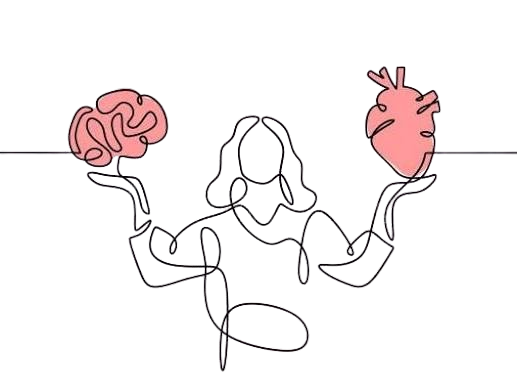
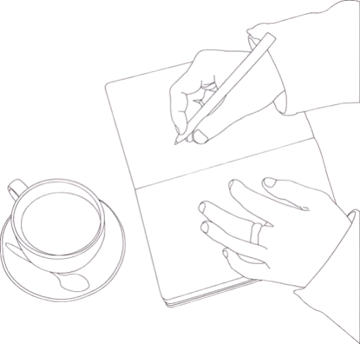
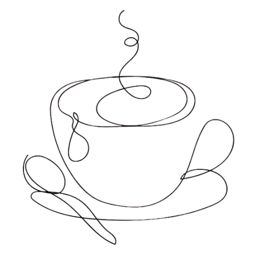
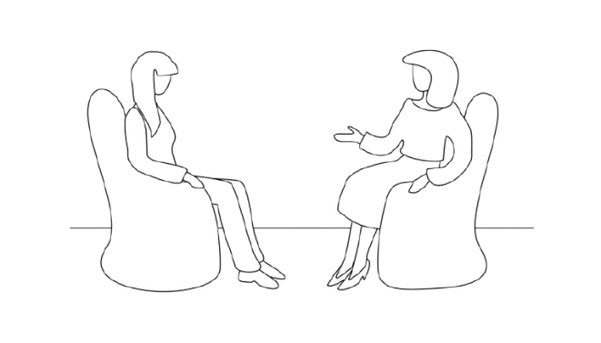
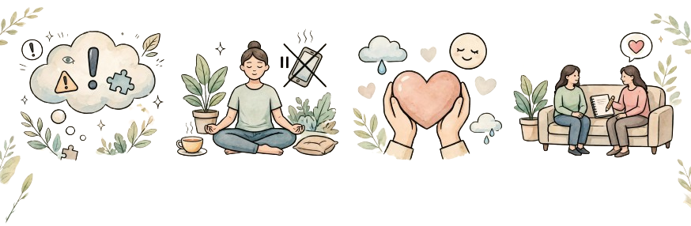

La Importancia de la Regulación Emocional
La salud mental no es la ausencia de problemas, sino la capacidad de gestionarlos de manera constructiva. Cuando aprendemos a identificar nuestras emociones en lugar de reprimirlas, disminuimos la carga de la ansiedad y fomentamos una mayor estabilidad psicológica en nuestro día a día.
Pilares de la Resiliencia Psicológica
Desarrollar una mentalidad resiliente implica practicar la autocompasión, establecer límites saludables en tus relaciones y reconocer que el bienestar emocional es un proceso dinámico que requiere paciencia constante.

Herramientas para el Cuidado Mental

Gestión de la Ansiedad
Estrategias basadas en la psicología para frenar pensamientos anticipatorios catastróficos y volver al momento presente.

Higiene Mental
Aprende a establecer pausas conscientes y límites digitales para aquietar el flujo excesivo de pensamientos y evitar el desgaste.

Autocompasión y Límites
Construye un diálogo interno constructivo y aprende a decir "no" para proteger tu energía mental y emocional.
Higiene Mental: Claves para el Día a Día
Así como cuidamos nuestra salud física, la mente también requiere hábitos de limpieza y descompresión para evitar la saturación:
- Desconexión digital consciente: Establece horarios libres de pantallas, especialmente antes de dormir, para reducir la sobreestimulación cerebral.
-
Escritura terapéutica (Journaling): Volcar tus pensamientos en papel ayuda a externalizar preocupaciones y ver los problemas con mayor perspectiva.

-
Pausas activas mentales: Permítete unos minutos al día sin hacer nada productivo; el descanso mental es indispensable para la claridad.

Preguntas Frecuentes sobre Salud Mental
¿Cómo saber si necesito ayuda profesional?
Si sientes que tus emociones interfieren de manera constante con tus actividades diarias, tus relaciones o tu descanso, acudir a terapia psicológica es la mejor decisión.
¿Es normal sentir ansiedad o estrés?
La ansiedad es una respuesta natural del cuerpo, pero cuando se vuelve crónica o desproporcionada, requiere técnicas de regulación y acompañamiento para aprender a gestionarla.

Pasos para Iniciar tu Rutina de Autocuidado Mental
- Identifica tus disparadores: Observa qué situaciones o pensamientos generan mayor fricción emocional en tu día.
- Dedica espacios de pausa: Aparta 5 a 10 minutos diarios sin pantallas ni estímulos externos para procesar tu jornada.
- Valida lo que sientes: Permítete sentir tristeza, frustración o enojo sin juzgarte por ello; la aceptación es el primer paso para sanar.
- Busca acompañamiento profesional: Recuerda que acudir a terapia psicológica es una herramienta invaluable de autoconocimiento.
